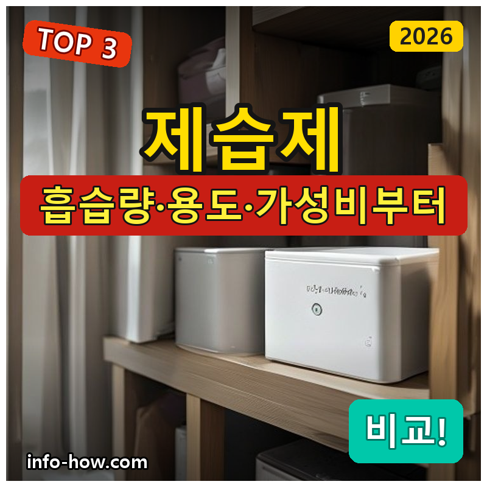
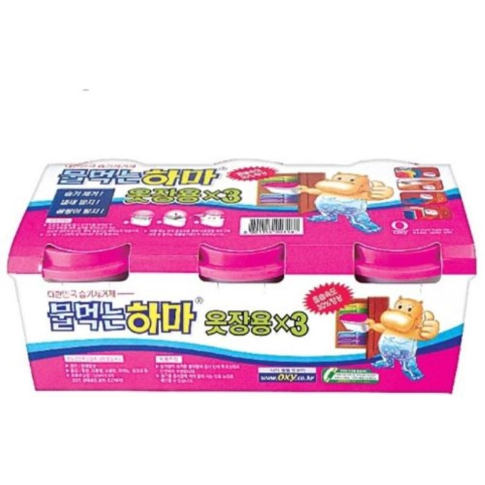
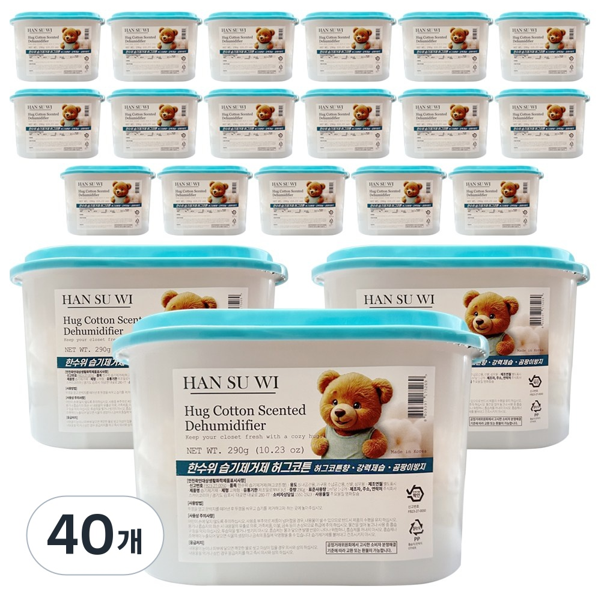
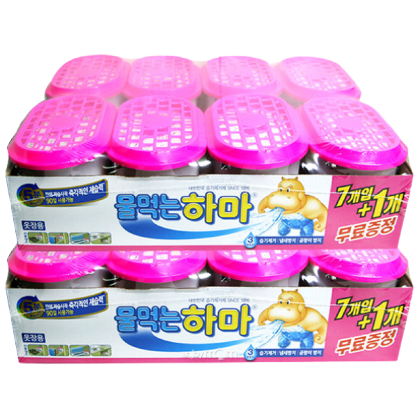

홈 › 제품리뷰 › 생활/가전
제습제, 옷장용이냐 대용량이냐
작성: 생활서식 모음 · 2026-08-23

파트너스 활동의 일환으로 일정액의 수수료를 지급받습니다
🛒 오늘의 쿠팡 특가 보러가기 →
제습제, 장마철 옷장·실내 습기 잡으려는데 뭘 살까요?
핵심은 "흡습량과 용도(옷장/실내), 가성비" 3대 를
"옷장용 하마" "대용량 흡습" "실내용 하마"용도별 정답 까지 담았으니
📋 목차
제습제, 옷장용이냐 대용량이냐 — 결론 먼저 스펙 비교표: 한눈에 보기 제습제 고를 때 봐야 할 3가지 옷장용이냐 대용량이냐, 뭘 사야 할까? 자주 묻는 질문 (FAQ) 결론: 한 줄 요약
제습제, 옷장용이냐 대용량이냐 — 결론 먼저
제습제는 "어디에 쓰느냐(옷장/실내)와 흡습량" 로 갈려요.옷장용 , 습한 방·창고면 대용량 , 넉넉히 상비면 실내용 다개수 가 무난합니다.
1 옷장·가성비 (가성비 초이스)
가성비

옷장용 하마
1. 물먹는 하마 옷장용 제습제 (3입)
대용량·실내용은 아니어도
추천 대상
옷장·서랍의 습기·눅눅함을 잡으려는 분 저렴하게 익숙한 제품을 쓰려는 분 걸이형으로 옷 사이에 걸어두려는 분 장점
옷장 걸이형이라 옷 사이 습기를 잡음 물먹는하마라 익숙하고 믿을 만함 3입이라 여러 옷장에 나눠 사용 단점
이 제품은 옷장·가성비용 입니다. 넓은 공간이면 2번 대용량, 넉넉한 상비면 3번 실내용으로 가세요. "옷장·서랍"이면 딱이에요.
한줄 리뷰
"옷장·서랍 습기를 저렴하게"면 옷장용 하마가 무난합니다. 걸어두면 돼요. 넓은 공간·상비면 2·3번을 보세요.
주요 스펙
제품: 물먹는 하마 옷장용 제습제 형태: 걸이형 구성: 3입 배송: 일반배송 가격: 약 14,220원 (변동 가능) ※ 실제 스펙·가격과 차이가 있을 수 있습니다
2 대용량·실속 (베스트 초이스)
베스트

대용량 흡습
2. 한수위 습기제거제 허그코튼 대용량 290g (40개)
290g 대용량 40개로
추천 대상
방·거실·창고 등 넓은 공간의 습기를 잡으려는 분 한 번에 여러 개 넉넉히 상비하려는 분 흡습량이 큰 제품을 원하는 분 장점
290g 대용량이라 흡습량이 넉넉함 40개라 집안 곳곳에 넉넉히 배치 가성비 좋게 대량으로 관리 단점
옷장·서랍이면 1번, 넉넉한 상비면 3번입니다. 2번은 "대용량 40개" 의 실속 구간 — 넓은 공간·대량 관리에 가장 무난합니다.
한줄 리뷰
"넓은 방·창고를 넉넉히"면 허그코튼 대용량이 좋습니다. 흡습량이 커요. 옷장 걸이형이면 1번을 보세요.
주요 스펙
제품: 한수위 허그코튼 습기제거제 용량: 290g × 40개 용도: 넓은 공간 배송: 로켓배송 가격: 약 33,800원 (변동 가능) ※ 실제 스펙·가격과 차이가 있을 수 있습니다
3 실내·상비 (프리미엄)
프리미엄

실내용 다개수
3. 물먹는 하마 525ml (16개)
525ml 바닥형 16개로
추천 대상
집안 곳곳(방·주방·신발장)에 두루 놓으려는 분 익숙한 물먹는하마를 넉넉히 상비하려는 분 바닥형(놓는 형태)을 선호하는 분 장점
525ml 바닥형이라 방·구석에 놓기 좋음 16개라 집안 전체에 넉넉히 배치 물먹는하마라 익숙하고 교체가 쉬움 단점
걸이형(옷장)·초대용량 흡습은 1·2번이 낫다 옷장이면 1번, 넓은 공간 대용량이면 2번이 합리적입니다. 3번은 실내 바닥형 16개(상비) 를 원하는 분에게 어울립니다.
한줄 리뷰
"집안 곳곳에 넉넉히 놓고"면 525ml 16개가 좋습니다. 상비하기 좋아요. 옷장·초대용량이면 1·2번이 합리적입니다.
주요 스펙
제품: 물먹는 하마 525ml 형태: 바닥형 구성: 16개 배송: 일반배송 가격: 약 36,000원 (변동 가능) ※ 실제 스펙·가격과 차이가 있을 수 있습니다
스펙 비교표: 한눈에 보기
가격·풍량·무게 중 본인에게 중요한 기준부터 보세요. "최고" 표시는 3제품 중 객관적 1위 값입니다.
← 좌우로 스크롤 →
제습제 고를 때 봐야 할 3가지
용도·흡습량만 봐도 고르기 쉽습니다.
1) 용도 — 옷장 vs 실내
옷장·서랍은 걸이형(옷 사이)이 편함 방·창고 등 넓은 공간은 바닥형·대용량 신발장·주방 등 구석은 소형 여러 개 2) 흡습량 — 공간 크기
용량(g·ml)이 클수록 오래 쓰고 흡습량이 큼 습한 계절·공간엔 대용량이 유리 가득 차면 교체(액체가 고이는 방식) 3) 개수·가성비 — 관리
집 전체면 다개수 세트가 개당 저렴 교체 주기·처리 방법도 참고 곰팡이·눅눅함이 심하면 제습기도 함께 고려 옷장용이냐 대용량이냐, 뭘 사야 할까?
공간과 흡습량만 정하면 답이 나옵니다.
옷장·가성비: 1번 옷장용 하마 → 걸이형대용량·실속: 2번 허그코튼 40개 → 넓은 공간실내·상비: 3번 하마 525ml 16개 → 곳곳자주 묻는 질문 (FAQ)
Q1. 제습제와 제습기 중 뭘 써야 하나요? 규모에 따라 다릅니다. 제습제(물먹는하마 등)는 옷장·서랍·작은 공간의 습기를 저렴하게 잡기 좋고, 제습기는 방·거실 등 넓은 공간의 습도를 적극적으로 낮춥니다. 국소 습기·곰팡이 방지엔 제습제, 실내 전체 습도 관리엔 제습기가 어울립니다. 둘을 병행하기도 합니다.
Q2. 제습제는 언제 교체하나요? 물(액체)이 가득 차면 교체합니다. 물먹는하마류는 습기를 흡수해 아래 통에 물이 고이는데, 가득 차면 흡습력이 떨어지므로 비우거나 교체하세요. 습한 계절엔 더 빨리 차므로 자주 확인하는 것이 좋습니다. 교체 시 내용물(염화칼슘 등)이 피부·눈에 닿지 않게 주의하세요.
Q3. 옷장용과 실내용은 뭐가 다른가요? 형태와 배치 방식이 다릅니다. 옷장용은 옷걸이에 거는 걸이형이 많아 옷 사이 습기를 잡고, 실내용은 바닥에 놓는 형태로 방·구석에 둡니다. 옷장·서랍이면 걸이형, 방·창고면 바닥형을 고르세요. 용도에 맞게 쓰면 습기 관리가 효율적입니다.
Q4. 제습제 하나로 방 전체 습기가 잡히나요? 넓은 방 전체는 제습기가 더 효과적입니다. 제습제는 국소 공간(옷장·서랍·구석) 습기를 잡는 데 좋지만, 넓은 방 전체의 습도를 크게 낮추기엔 한계가 있습니다. 넓은 공간은 대용량 제습제를 여러 개 두거나 제습기를 함께 쓰는 것이 좋습니다. 곰팡이·결로가 심하면 환기·제습기를 병행하세요.
Q5. 제습제 내용물이 새면 위험한가요? 피부·눈 접촉과 삼킴에 주의해야 합니다. 흡습 후 고이는 액체(염화칼슘 용액 등)는 피부·눈에 자극이 될 수 있으니 접촉 시 씻어내고, 아이·반려동물 손이 닿지 않는 곳에 두세요. 새거나 넘치지 않게 평평한 곳에 놓고, 처리 시 하수구에 흘려보내거나 제품 안내를 따르세요.
결론: 한 줄 요약
1) 옷장용 하마 — 약 14,220원 / 옷장·가성비. 걸이형 3입.2) 한수위 허그코튼 — 약 33,800원 / 대용량·실속. 40개.3) 물먹는하마 525ml — 약 36,000원 / 실내·상비. 16개.이 포스팅은 쿠팡 파트너스 활동의 일환으로, 이에 따른 일정액의 수수료를 제공받습니다.